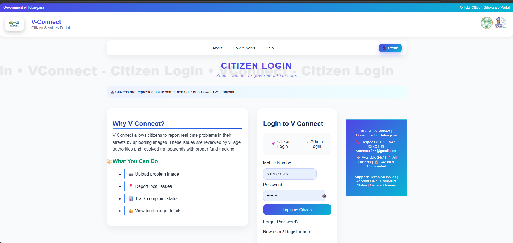
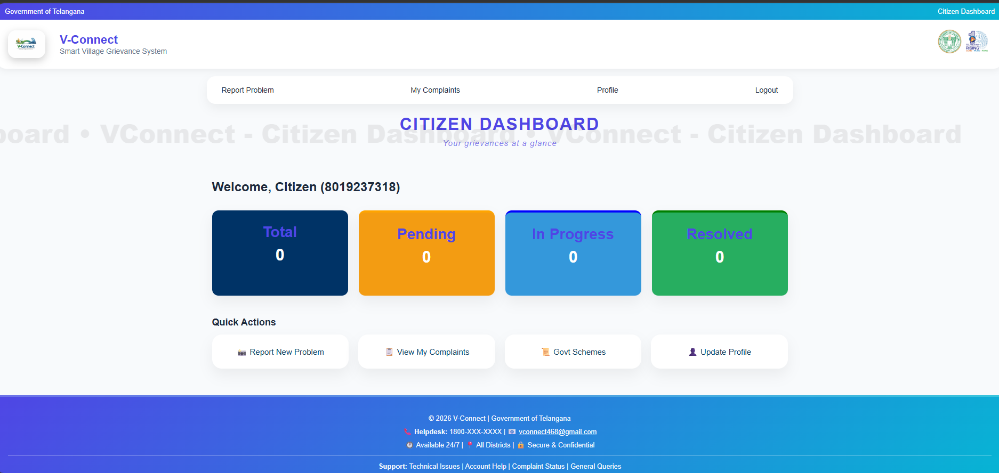
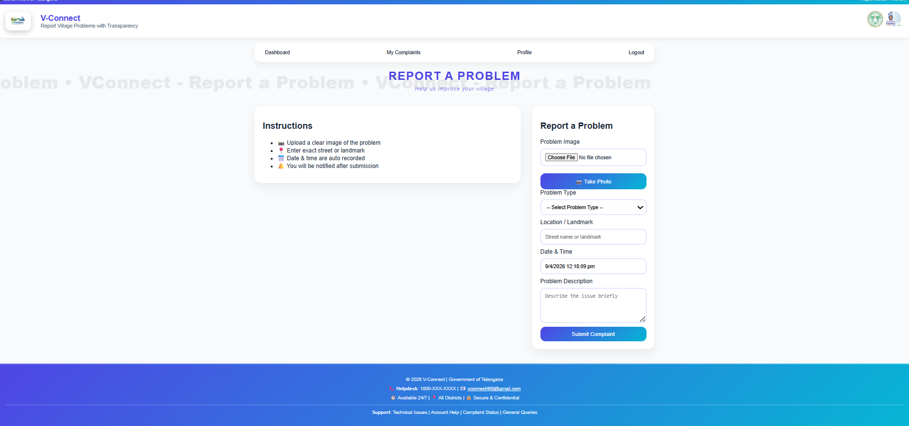

V-Connect
Vignan's Foundation for Science, Technology & Research
B.Tech Project Presentation
Problem Statement
Challenges in the current grievance redressal ecosystem
-
Difficulty in Reporting Issues
Citizens lack a simplified, accessible platform to register complaints about civic problems -
No Transparency in Handling
Complaint processing happens behind closed doors with no visibility to the complainant -
Lack of Tracking System
No mechanism to track complaint status, assigned department, or estimated resolution time
Low Resolution Rate
Only 23% of civic complaints get resolved within expected timelines
Objectives
Easy Complaint Registration
Simplified, intuitive interface allowing citizens to file complaints with minimal steps and relevant details
Real-Time Status Tracking
Citizens can track the progress of their complaints at every stage from submission to resolution
Admin Monitoring System
Comprehensive dashboard for administrators to manage, prioritize, and resolve grievances efficiently
Transparency & Accountability
Complete visibility into the complaint lifecycle ensuring responsible governance and trust
Proposed Solution
V-Connect is a comprehensive web-based platform that bridges the gap between citizens and government authorities through a structured, transparent grievance management workflow.
-
Web-Based Platform — Accessible from any device with a browser, no installation required
-
Dual Module System — Separate interfaces for Citizens and Administrators with role-based access
-
Complete Lifecycle Tracking — From filing to resolution with status updates at each stage
-
Visual Evidence — Image upload support for documenting issues with photographic proof
Complaint Lifecycle
System Architecture
Presentation Layer
HTML5 · CSS · JavaScript
Application Layer
Node.js · Express.js · Routes
Data Layer
MySQL · Data Tables · Stored Procedures
Communication Flow
- Client sends HTTP requests to Express server
- Server processes logic, validates data
- MySQL executes CRUD operations
- JSON response returned to client
Security Measures
Password hashing with bcrypt · JWT-based authentication · Input sanitization · CSRF protection
System Modules
Citizen Module
Register, file complaints, track status
Admin Module
Manage, update, allocate resources
Authentication System
Secure login, registration, OTP verification, session management
Notification System
Real-time alerts on status changes, email notifications, in-app messages
Citizen Module Features
Register / Login
Create account with OTP-verified mobile number for secure access
Add Complaint with Image
Submit detailed complaints with category, description, and photo evidence
View All Complaints
See submitted complaints with current status, priority, and response details
Notifications
Receive real-time alerts when complaint status changes or admin responds
Admin Module Features
View All Complaints
Centralized view of all citizen complaints with filters by category, status, and date
Update Status
Change complaint status through defined stages: Pending, In Progress, Resolved
Allocate Funds
Assign budget for complaint resolution with amount tracking and approval workflow
Analytics Dashboard
Visual insights on complaint trends, resolution rates, department performance
Database Design
Users Table
| Field | Type | Description |
|---|---|---|
| user_id | INT PK | Auto-increment primary key |
| name | VARCHAR | Full name of user |
| VARCHAR | Unique email address | |
| phone | VARCHAR | Mobile number (OTP verified) |
| password | VARCHAR | Bcrypt hashed password |
| role | ENUM | Citizen / Admin |
Complaints Table
| Field | Type | Description |
|---|---|---|
| complaint_id | INT PK | Auto-increment primary key |
| user_id | INT FK | Reference to Users table |
| category | VARCHAR | Road, Water, Electricity, etc. |
| description | TEXT | Detailed complaint text |
| image | VARCHAR | Uploaded image file path |
| status | ENUM | Pending / In Progress / Resolved |
| funds | DECIMAL | Allocated fund amount |
| created_at | DATETIME | Timestamp of submission |
Key Features
Image Upload
Citizens can attach photographic evidence of the issue using multer file upload middleware, stored securely on the server
OTP Verification
Mobile number verification through OTP ensures authentic user registration and prevents spam or duplicate accounts
Real-Time Notifications
Instant in-app and email notifications triggered at every status change keeping citizens informed throughout the process
Fund Allocation
Admin can assign and track monetary resources for each complaint, enabling transparent budget management for civic issues
System Screenshots




Results & Outcomes
Complaints Stored
All citizen complaints are successfully stored in MySQL database with image paths and metadata
Admin Control Achieved
Full CRUD operations for admin — view, update status, allocate funds, and manage users
End-to-End Flow
Complete complaint lifecycle from registration to resolution working seamlessly
Advantages
Transparency
Every complaint stage is visible to citizens, eliminating information asymmetry between government and public
Time-Saving
Digital submission replaces manual paperwork, reducing filing time from days to minutes with instant acknowledgment
Easy Monitoring
Centralized dashboard allows administrators to monitor, prioritize, and manage all grievances from a single interface
Accountability
Role-based access and audit trails ensure every action is traceable, promoting responsible governance
Cost-Effective
Open-source tech stack (Node.js, MySQL) minimizes infrastructure costs while delivering enterprise-grade functionality
Future Enhancements
Mobile Application
Native Android/iOS app using React Native for on-the-go complaint filing with push notifications and camera integration
AI-Based Classification
Machine learning model to auto-categorize complaints and predict resolution timeline based on historical data patterns
GPS Tracking
Automatic location tagging using device GPS to pinpoint exact issue location and route complaints to nearest department
Conclusion
V-Connect successfully bridges the gap between citizens and government authorities by providing a transparent, efficient, and user-friendly grievance management platform. It enhances governance quality, ensures accountability, and significantly improves the citizen experience in reporting and resolving civic issues.